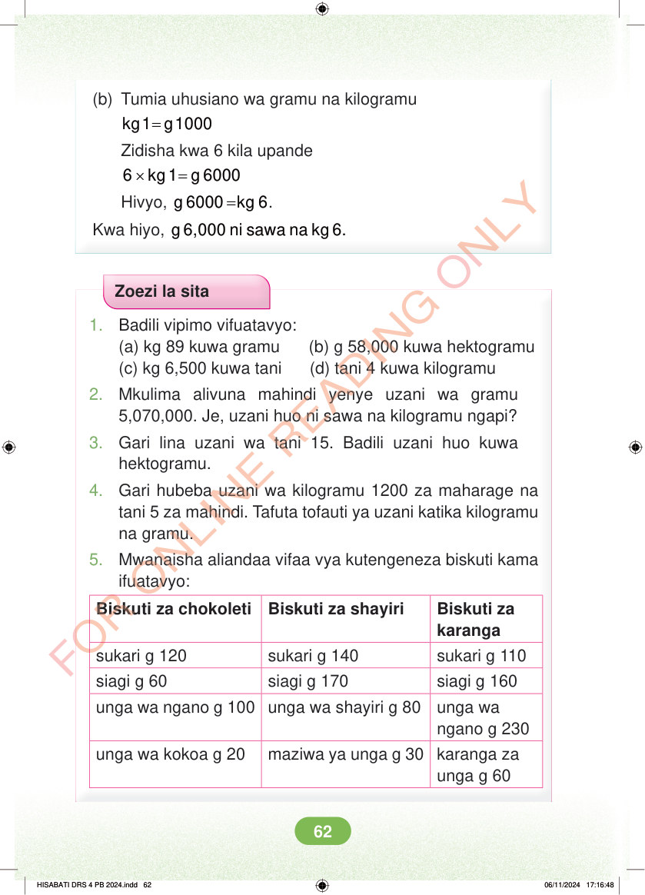

<!DOCTYPE html>
<html lang="sw-TZ"><head><meta charset="utf-8"><meta name="viewport" content="width=device-width,initial-scale=1">
<title>Hisabati: Kitabu cha Mwanafunzi Darasa la Nne</title>
<meta name="title-id" content="pg068_sec001"><meta name="page-section-id" content="71">
<link href="./content/tailwind_output.css" rel="stylesheet"><link href="./assets/libs/fontawesome/css/all.min.css" rel="stylesheet"><link href="./assets/fonts.css" rel="stylesheet">
<style>body{margin:0;background:#eef1ed}main{width:100%;display:flex;justify-content:center;padding:1rem 1rem 5rem;box-sizing:border-box}#content{width:100%;display:flex;justify-content:center}.pdf-page{position:relative;width:min(calc(100vw - 2rem),56rem);aspect-ratio:540.8980102539062/750.6610107421875;background:white;box-shadow:0 4px 24px #0002;overflow:hidden}.pdf-page img{position:absolute;inset:0;width:100%;height:100%;object-fit:fill}</style>
</head><body><main><h1 class="sr-only" id="page-heading">Ukurasa wa 68</h1><div id="content" class="opacity-0"><section role="article" data-section-type="pdf_accessible_page" data-section-id="pg068_sec001" aria-labelledby="page-heading" class="pdf-page"><p class="sr-only" data-id="pg068_gp001_tx001">(b) Tumia uhusiano wa gramu na kilogramu = kg 1 g 1000 Zidisha kwa 6 kila upande × = 6 kg1 g 6000 Hivyo, = g 6000 kg 6. Kwa hiyo, g 6,000 ni sawa na kg 6. Zoezi la sita 1. Badili vipimo vifuatavyo: (a) kg 89 kuwa gramu (b) g 58,000 kuwa hektogramu (c) kg 6,500 kuwa tani (d) tani 4 kuwa kilogramu 2. Mkulima alivuna mahindi yenye uzani wa gramu 5,070,000. Je, uzani huo ni sawa na kilogramu ngapi? 3. Gari lina uzani wa tani 15. Badili uzani huo kuwa hektogramu. 4. Gari hubeba uzani wa kilogramu 1200 za maharage na tani 5 za mahindi. Tafuta tofauti ya uzani katika kilogramu na gramu. 5. Mwanaisha aliandaa vifaa vya kutengeneza biskuti kama ifuatavyo: Biskuti za chokoleti Biskuti za shayiri Biskuti za karanga sukari g 120 sukari g 140 sukari g 110 siagi g 60 siagi g 170 siagi g 160 unga wa ngano g 100 unga wa shayiri g 80 unga wa ngano g 230 unga wa kokoa g 20 maziwa ya unga g 30 karanga za unga g 60 HISABATI DRS 4 PB 2024.indd 62 HISABATI DRS 4 PB 2024.indd 62 06/11/2024 17:16:48 06/11/2024 17:16:48</p></section></div></main><div class="relative z-50" id="interface-container"></div><div class="relative z-50" id="nav-container"></div><script src="./assets/offline-preloader.js?v=audiofix-20260824-1"></script><script src="./assets/scorm.js"></script><script src="./assets/base.bundle.local.js?v=audiofix-20260824-1"></script></body></html>